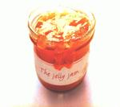

| Artist: | The Jelly Jam |
| Title: | The Jelly Jam |
| Label: | Inside Out IOMCD 096 |
| Length(s): | 45 minutes |
| Year(s) of release: | 2002 |
| Month of review: | [04/2002] |
| 1) | I Can't Help You | 3.01 |
| 2) | No Remedy | 4.05 |
| 3) | Nature | 0.59 |
| 4) | Nature's Girl | 5.12 |
| 5) | Feeling | 5.22 |
| 6) | Reliving | 4.12 |
| 7) | The Jelly Jam | 5.50 |
| 8) | I Am The King | 4.38 |
| 9) | The King's Dance | 2.11 |
| 10) | Under The Tree | 9.37 |
No Remedy also is a pretty alternative track, in style quite akin to the previous.
Nature is a short introspective instrumental. Despite its title, the slow nature makes it quite different from its girl.
Nature's Girl is somewhat less alternative directed. The start of the track is rocky enough, although somewhat more hard edged, but the instrumental section in the middle in itself is non-alternative (or alternative from an alternative point of view, alt alt pov), and the harmonics also give the track a more progressive feel.
Feeling returns to the alt feeling of the first two tracks. It start of pretty straight forward, not all that interesting. The bridge has a more harmonic vocal bit, which through a caleidoscopic effect returns to the somewhat bleak main theme of the track.
Reliving has a sort of ballady feel, although the alt feel remains present. Unfortunately it is more the slowness of the track that's striking, than a certain intimacy. It passes by.
The Jelly Jam has a fully different feel. As its name might suggest it's a pretty jammy track, just bass, guitar and drums, no vocal. After the previous alt stuff this makes for a nice change.
I Am The King starts pretty bassy, making for a different start of YAAT (yet another alternative track). For a change, though, this track has something of a climax, making it just a tad more interesting than the other YAATs.
The King's Dance is another short instrumental, with a quiet strummy nature and slow build up. Pretty nice track.
Under The Tree is a track somewhat reminiscent of Led Zeppelin, an association especially created by the use of the acoustic guitar. Aside from that, Tabor doesn't use the whine as he does on the YAATs, giving the song a more open feeling. Halfway the track it moves into sort of jam mode that's pretty psychedelic, it at least makes you want to close your eyes and sway along (don't do this while driving). It closes the album with a positive feel.